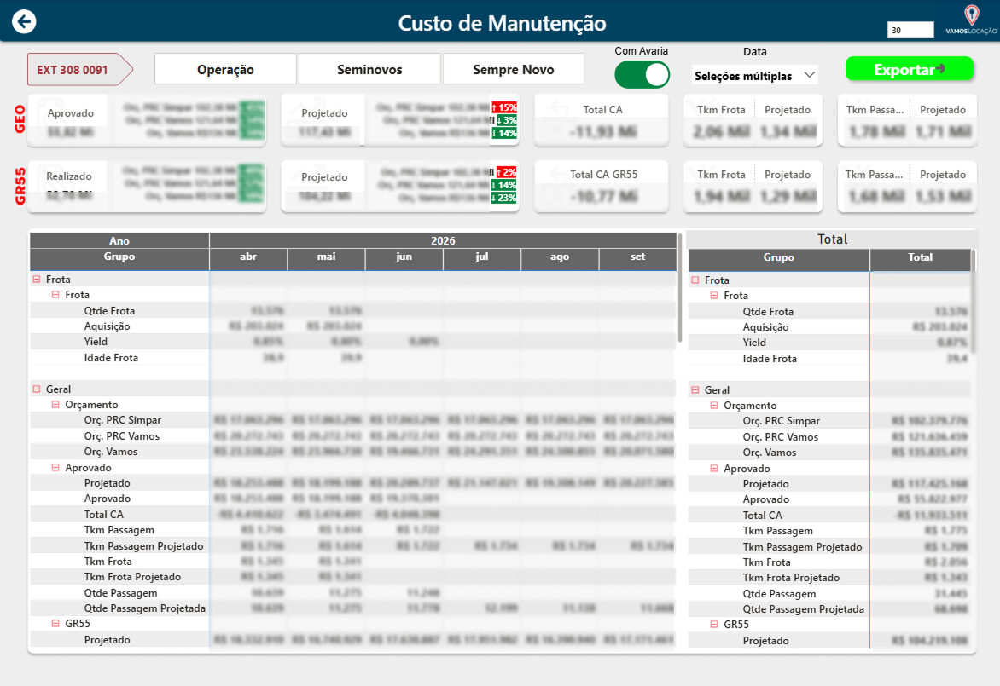

Inteligência Financeira: Gestão de Custos e DRE Projetado
StorytellingO Desafio Logo ao assumir os projetos de dados na área de manutenção da Vamos, encarei o meu maior desafio técnico e analítico: o Custo — o ofensor clássico de qualquer grande operação. A complexidade central não era apenas relatar gastos, mas sim domar a alta fragmentação das informações, precisando extrair, tratar e cruzar múltiplas fontes de dados densas para conseguir montar um cenário financeiro unificado e confiável. A Solução (Arquitetura e UX de Dados) Após estruturar a engenharia por trás dessas múltiplas fontes, desenvolvi um painel focado em usabilidade executiva. Em vez de usar gráficos convencionais, tomei a decisão estratégica de apresentar os dados em um formato visual de DRE (Demonstração do Resultado do Exercício). Essa escolha de design de dados gerou familiaridade imediata para os diretores e gestores financeiros, permitindo uma navegação muito mais fluida e intuitiva. Destaque Estratégico (Projeções e Visão 360º) O projeto foi muito além de registrar o passado. Transformei o dashboard em uma ferramenta de planejamento. Entreguei não apenas a visão clara do custo de manutenção, mas também cenários projetados e comparativos rigorosos com o orçamento da área. Adicionei camadas de negócio cruciais, como a visão da frota operacional ativa, métricas de Tkm e comportamento de aquisições, cruzando a despesa diretamente com a capacidade produtiva da frota. O Impacto A diretoria ganhou uma "radiografia" completa e em tempo real da saúde financeira da manutenção. Com o cruzamento do custo realizado, projeções futuras e os limites do orçamento, tornou-se possível identificar cirurgicamente onde a operação estava pecando e sangrando recursos. Isso permitiu à liderança corrigir rotas rapidamente e proteger a rentabilidade da companhia de forma proativa.